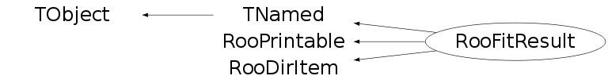

class RooFitResult: public TNamed, public RooPrintable, public RooDirItem
RooFitResult is a container class to hold the input and output of a PDF fit to a dataset. It contains: - Values of all constant parameters - Initial and final values of floating parameters with error - Correlation matrix and global correlation coefficients - NLL and EDM at mininum No references to the fitted PDF and dataset are stored
Function Members (Methods)
public:
| RooFitResult(const RooFitResult& other) | |
| RooFitResult(const char* name = 0, const char* title = 0) | |
| virtual | ~RooFitResult() |
| void | TObject::AbstractMethod(const char* method) const |
| virtual void | TObject::AppendPad(Option_t* option = "") |
| virtual void | TObject::Browse(TBrowser* b) |
| static TClass* | Class() |
| virtual const char* | TObject::ClassName() const |
| virtual void | TNamed::Clear(Option_t* option = "") |
| virtual TObject* | clone() const |
| virtual TObject* | Clone(const char* newname = 0) const |
| virtual Int_t | TNamed::Compare(const TObject* obj) const |
| TMatrixDSym | conditionalCovarianceMatrix(const RooArgList& params) const |
| const RooArgList& | constPars() const |
| virtual void | TNamed::Copy(TObject& named) const |
| const RooArgList* | correlation(const RooAbsArg& par) const |
| const RooArgList* | correlation(const char* parname) const |
| Double_t | correlation(const RooAbsArg& par1, const RooAbsArg& par2) const |
| Double_t | correlation(const char* parname1, const char* parname2) const |
| TH2* | correlationHist(const char* name = "correlation_matrix") const |
| const TMatrixDSym& | correlationMatrix() const |
| const TMatrixDSym& | covarianceMatrix() const |
| Int_t | covQual() const |
| RooAbsPdf* | createHessePdf(const RooArgSet& params) const |
| virtual Int_t | defaultPrintContents(Option_t* opt) const |
| static ostream& | RooPrintable::defaultPrintStream(ostream* os = 0) |
| virtual RooPrintable::StyleOption | defaultPrintStyle(Option_t* opt) const |
| virtual void | TObject::Delete(Option_t* option = "")MENU |
| virtual Int_t | TObject::DistancetoPrimitive(Int_t px, Int_t py) |
| virtual void | TObject::Draw(Option_t* option = "") |
| virtual void | TObject::DrawClass() constMENU |
| virtual TObject* | TObject::DrawClone(Option_t* option = "") constMENU |
| virtual void | TObject::Dump() constMENU |
| Double_t | edm() const |
| virtual void | TObject::Error(const char* method, const char* msgfmt) const |
| virtual void | TObject::Execute(const char* method, const char* params, Int_t* error = 0) |
| virtual void | TObject::Execute(TMethod* method, TObjArray* params, Int_t* error = 0) |
| virtual void | TObject::ExecuteEvent(Int_t event, Int_t px, Int_t py) |
| virtual void | TObject::Fatal(const char* method, const char* msgfmt) const |
| virtual void | TNamed::FillBuffer(char*& buffer) |
| virtual TObject* | TObject::FindObject(const char* name) const |
| virtual TObject* | TObject::FindObject(const TObject* obj) const |
| const RooArgList& | floatParsFinal() const |
| const RooArgList& | floatParsInit() const |
| virtual Option_t* | TObject::GetDrawOption() const |
| static Long_t | TObject::GetDtorOnly() |
| virtual const char* | TObject::GetIconName() const |
| virtual const char* | TNamed::GetName() const |
| virtual char* | TObject::GetObjectInfo(Int_t px, Int_t py) const |
| static Bool_t | TObject::GetObjectStat() |
| virtual Option_t* | TObject::GetOption() const |
| virtual const char* | TNamed::GetTitle() const |
| virtual UInt_t | TObject::GetUniqueID() const |
| const RooArgList* | globalCorr() |
| Double_t | globalCorr(const RooAbsArg& par) |
| Double_t | globalCorr(const char* parname) |
| virtual Bool_t | TObject::HandleTimer(TTimer* timer) |
| virtual ULong_t | TNamed::Hash() const |
| virtual void | TObject::Info(const char* method, const char* msgfmt) const |
| virtual Bool_t | TObject::InheritsFrom(const char* classname) const |
| virtual Bool_t | TObject::InheritsFrom(const TClass* cl) const |
| virtual void | TObject::Inspect() constMENU |
| void | TObject::InvertBit(UInt_t f) |
| virtual TClass* | IsA() const |
| virtual Bool_t | TObject::IsEqual(const TObject* obj) const |
| virtual Bool_t | TObject::IsFolder() const |
| Bool_t | isIdentical(const RooFitResult& other, Double_t tol = 5e-5, Double_t tolCorr = 1e-4, Bool_t verbose = kTRUE) const |
| Bool_t | TObject::IsOnHeap() const |
| virtual Bool_t | TNamed::IsSortable() const |
| Bool_t | TObject::IsZombie() const |
| static RooFitResult* | lastMinuitFit(const RooArgList& varList = RooArgList()) |
| virtual void | TNamed::ls(Option_t* option = "") const |
| void | TObject::MayNotUse(const char* method) const |
| Double_t | minNll() const |
| static void | RooPrintable::nameFieldLength(Int_t newLen) |
| virtual Bool_t | TObject::Notify() |
| Int_t | numInvalidNLL() const |
| UInt_t | numStatusHistory() const |
| void | TObject::Obsolete(const char* method, const char* asOfVers, const char* removedFromVers) const |
| static void | TObject::operator delete(void* ptr) |
| static void | TObject::operator delete(void* ptr, void* vp) |
| static void | TObject::operator delete[](void* ptr) |
| static void | TObject::operator delete[](void* ptr, void* vp) |
| void* | TObject::operator new(size_t sz) |
| void* | TObject::operator new(size_t sz, void* vp) |
| void* | TObject::operator new[](size_t sz) |
| void* | TObject::operator new[](size_t sz, void* vp) |
| TNamed& | TNamed::operator=(const TNamed& rhs) |
| virtual void | TObject::Paint(Option_t* option = "") |
| RooPlot* | plotOn(RooPlot* frame, const RooAbsArg& par1, const RooAbsArg& par2, const char* options = "ME") const |
| RooPlot* | plotOn(RooPlot* plot, const char* parName1, const char* parName2, const char* options = "ME") const |
| virtual void | TObject::Pop() |
| virtual void | Print(Option_t* options = 0) const |
| virtual void | RooPrintable::printAddress(ostream& os) const |
| virtual void | printArgs(ostream& os) const |
| virtual void | printClassName(ostream& os) const |
| virtual void | RooPrintable::printExtras(ostream& os) const |
| virtual void | printMultiline(ostream& os, Int_t contents, Bool_t verbose = kFALSE, TString indent = "") const |
| virtual void | printName(ostream& os) const |
| virtual void | RooPrintable::printStream(ostream& os, Int_t contents, RooPrintable::StyleOption style, TString indent = "") const |
| virtual void | printTitle(ostream& os) const |
| virtual void | RooPrintable::printTree(ostream& os, TString indent = "") const |
| virtual void | printValue(ostream& os) const |
| const RooArgList& | randomizePars() const |
| virtual Int_t | TObject::Read(const char* name) |
| virtual void | TObject::RecursiveRemove(TObject* obj) |
| TMatrixDSym | reducedCovarianceMatrix(const RooArgList& params) const |
| void | TObject::ResetBit(UInt_t f) |
| virtual void | TObject::SaveAs(const char* filename = "", Option_t* option = "") constMENU |
| virtual void | TObject::SavePrimitive(ostream& out, Option_t* option = "") |
| void | TObject::SetBit(UInt_t f) |
| void | TObject::SetBit(UInt_t f, Bool_t set) |
| virtual void | TObject::SetDrawOption(Option_t* option = "")MENU |
| static void | TObject::SetDtorOnly(void* obj) |
| virtual void | SetName(const char* name) |
| virtual void | SetNameTitle(const char* name, const char* title) |
| static void | TObject::SetObjectStat(Bool_t stat) |
| virtual void | TNamed::SetTitle(const char* title = "")MENU |
| virtual void | TObject::SetUniqueID(UInt_t uid) |
| virtual void | ShowMembers(TMemberInspector& insp) |
| virtual Int_t | TNamed::Sizeof() const |
| Int_t | status() const |
| Int_t | statusCodeHistory(UInt_t icycle) |
| const char* | statusLabelHistory(UInt_t icycle) |
| virtual void | Streamer(TBuffer& b) |
| void | StreamerNVirtual(TBuffer& b) |
| virtual void | TObject::SysError(const char* method, const char* msgfmt) const |
| Bool_t | TObject::TestBit(UInt_t f) const |
| Int_t | TObject::TestBits(UInt_t f) const |
| virtual void | TObject::UseCurrentStyle() |
| virtual void | TObject::Warning(const char* method, const char* msgfmt) const |
| virtual Int_t | TObject::Write(const char* name = 0, Int_t option = 0, Int_t bufsize = 0) |
| virtual Int_t | TObject::Write(const char* name = 0, Int_t option = 0, Int_t bufsize = 0) const |
protected:
| void | RooDirItem::appendToDir(TObject* obj, Bool_t forceMemoryResident = kFALSE) |
| Double_t | correlation(Int_t row, Int_t col) const |
| Double_t | covariance(Int_t row, Int_t col) const |
| virtual void | TObject::DoError(int level, const char* location, const char* fmt, va_list va) const |
| void | fillCorrMatrix() |
| void | fillCorrMatrix(const vector<double>& globalCC, const TMatrixDSym& corrs, const TMatrixDSym& covs) |
| void | fillLegacyCorrMatrix() const |
| void | TObject::MakeZombie() |
| void | RooDirItem::removeFromDir(TObject* obj) |
| void | setConstParList(const RooArgList& list) |
| void | setCovarianceMatrix(TMatrixDSym& V) |
| void | setCovQual(Int_t val) |
| void | setEDM(Double_t val) |
| void | setFinalParList(const RooArgList& list) |
| void | setInitParList(const RooArgList& list) |
| void | setMinNLL(Double_t val) |
| void | setNumInvalidNLL(Int_t val) |
| void | setStatus(Int_t val) |
| void | setStatusHistory(vector<std::pair<std::string,int> >& hist) |
Data Members
public:
| enum TObject::EStatusBits { | kCanDelete | |
| kMustCleanup | ||
| kObjInCanvas | ||
| kIsReferenced | ||
| kHasUUID | ||
| kCannotPick | ||
| kNoContextMenu | ||
| kInvalidObject | ||
| }; | ||
| enum TObject::[unnamed] { | kIsOnHeap | |
| kNotDeleted | ||
| kZombie | ||
| kBitMask | ||
| kSingleKey | ||
| kOverwrite | ||
| kWriteDelete | ||
| }; | ||
| enum RooPrintable::ContentsOption { | kName | |
| kClassName | ||
| kValue | ||
| kArgs | ||
| kExtras | ||
| kAddress | ||
| kTitle | ||
| kCollectionHeader | ||
| }; | ||
| enum RooPrintable::StyleOption { | kInline | |
| kSingleLine | ||
| kStandard | ||
| kVerbose | ||
| kTreeStructure | ||
| }; |
protected:
| TMatrixDSym* | _CM | Correlation matrix |
| TVectorD* | _GC | Global correlation coefficients |
| TMatrixF* | _Lt | ! triangular matrix used for generate random perturbations |
| TMatrixDSym* | _VM | Covariance matrix |
| RooArgList* | _constPars | List of constant parameters |
| TList | _corrMatrix | ! Correlation matrix (list of RooArgLists) |
| Int_t | _covQual | MINUIT quality code of covariance matrix |
| TDirectory* | RooDirItem::_dir | ! Associated directory |
| Double_t | _edm | Estimated distance to minimum |
| RooArgList* | _finalPars | List of floating parameters with final values |
| RooArgList* | _globalCorr | ! List of global correlation coefficients |
| RooArgList* | _initPars | List of floating parameters with initial values |
| Double_t | _minNLL | NLL at minimum |
| static Int_t | RooPrintable::_nameLength | |
| Int_t | _numBadNLL | Number calls with bad (zero,negative) likelihood |
| RooArgList* | _randomPars | ! List of floating parameters with most recent random perturbation applied |
| Int_t | _status | MINUIT status code |
| vector<std::pair<std::string,int> > | _statusHistory | History of status codes |
| TString | TNamed::fName | object identifier |
| TString | TNamed::fTitle | object title |
Class Charts
{kind=link}
{kind=link}
{kind=link}
{kind=link}

Function documentation
RooFitResult(const char* name = 0, const char* title = 0)
Constructor with name and title coverity[UNINIT_CTOR]
void setInitParList(const RooArgList& list)
Fill the list of initial values of the floating parameters
void setFinalParList(const RooArgList& list)
Fill the list of final values of the floating parameters
Int_t statusCodeHistory(UInt_t icycle)
const char* statusLabelHistory(UInt_t icycle)
RooPlot * plotOn(RooPlot* plot, const char* parName1, const char* parName2, const char* options = "ME") const
Add objects to a 2D plot that represent the fit results for the two named parameters. The input frame with the objects added is returned, or zero in case of an error. Which objects are added are determined by the options string which should be a concatenation of the following (not case sensitive): M - a marker at the best fit result E - an error ellipse calculated at 1-sigma using the error matrix at the minimum 1 - the 1-sigma error bar for parameter 1 2 - the 1-sigma error bar for parameter 2 B - the bounding box for the error ellipse H - a line and horizontal axis for reading off the correlation coefficient V - a line and vertical axis for reading off the correlation coefficient A - draw axes for reading off the correlation coefficients with the H or V options You can change the attributes of objects in the returned RooPlot using the various RooPlot::getAttXxx(name) member functions, e.g. plot->getAttLine("contour")->SetLineStyle(kDashed); Use plot->Print() for a list of all objects and their names (unfortunately most of the ROOT builtin graphics objects like TLine are unnamed). Drag the left mouse button along the labels of either axis button to interactively zoom in a plot.
const RooArgList& randomizePars() const
Return a list of floating parameter values that are perturbed from the final fit values by random amounts sampled from the covariance matrix. The returned object is overwritten with each call and belongs to the RooFitResult. Uses the "square root method" to decompose the covariance matrix, which makes inverting it unnecessary.
Double_t correlation(const char* parname1, const char* parname2) const
Return the correlation between parameters 'par1' and 'par2'
const RooArgList* correlation(const char* parname) const
Return the set of correlation coefficients of parameter 'par' with all other floating parameters
Double_t correlation(Int_t row, Int_t col) const
Return a correlation matrix element addressed with numeric indices.
Double_t covariance(Int_t row, Int_t col) const
Return the covariance matrix element addressed with numeric indices.
void printMultiline(ostream& os, Int_t contents, Bool_t verbose = kFALSE, TString indent = "") const
Print fit result to stream 'os'. In Verbose mode, the contant parameters and the initial and final values of the floating parameters are printed. Standard mode only the final values of the floating parameters are printed
void fillCorrMatrix(const vector<double>& globalCC, const TMatrixDSym& corrs, const TMatrixDSym& covs)
Function called by RooMinimizer
void fillCorrMatrix()
Internal utility method to extract the correlation matrix and the global correlation coefficients from the MINUIT memory buffer and fill the internal arrays.
Bool_t isIdentical(const RooFitResult& other, Double_t tol = 5e-5, Double_t tolCorr = 1e-4, Bool_t verbose = kTRUE) const
Return true if this fit result is identical to other within tolerance 'tol' on fitted values and tolerance 'tolCor' on correlation coefficients
RooFitResult* lastMinuitFit(const RooArgList& varList = RooArgList())
Import the results of the last fit performed by gMinuit, interpreting the fit parameters as the given varList of parameters.
void setCovarianceMatrix(TMatrixDSym& V)
Store externally provided correlation matrix in his RooFitResult ;
TH2* correlationHist(const char* name = "correlation_matrix") const
Return TH2D of correlation matrix
TMatrixDSym reducedCovarianceMatrix(const RooArgList& params) const
Return a reduced covariance matrix (Note that Vred _is_ a simple sub-matrix of V, row/columns are ordered to matched the convention given in input argument 'params'
TMatrixDSym conditionalCovarianceMatrix(const RooArgList& params) const
Return a reduced covariance matrix, which is calculated as ___ -1 Vred = V22 = V11 - V12 * V22 * V21 Where V11,V12,V21,V22 represent a block decomposition of the covariance matrix into observables that are propagated (labeled by index '1') and that are not propagated (labeled by index '2'), and V22bar is the Shur complement of V22, calculated as shown above (Note that Vred is _not_ a simple sub-matrix of V)
RooAbsPdf* createHessePdf(const RooArgSet& params) const
Return a p.d.f that represents the fit result as a multi-variate probability densisty function on the floating fit parameters, including correlations
void printValue(ostream& os) const
Print the value of the fit result, i.e.g the status, minimized FCN, edm and covariance quality code
RooPrintable::StyleOption defaultPrintStyle(Option_t* opt) const
Configure mapping of Print() arguments to RooPrintable print styles
Double_t correlation(const RooAbsArg& par1, const RooAbsArg& par2) const
Return correlation between par1 and par2
return correlation(par1.GetName(),par2.GetName())
Double_t globalCorr(const RooAbsArg& par)
Global correlation accessors
{ return globalCorr(par.GetName()) ; }RooPlot * plotOn(RooPlot* frame, const RooAbsArg& par1, const RooAbsArg& par2, const char* options = "ME") const
Add objects to a 2D plot